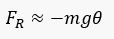
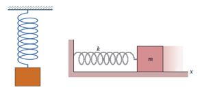

Simple Harmonic Motion
-
PERIODIC MOTION
- Vibratory motion or vibration is a type of motion where the particle undergoes to and from motion. It could be regular vibration which repeats itself over and over during a given length of time (like the motion of a simple pendulum or the piston of a gasoline engine) or irregular vibration (like the shaking of a building when there is an earthquake).
- Gauss’ law relates the net flux Φ of an electric field through a closed surface (a Gaussian surface) to the net charge qenc that is enclosed by that surface. It tells us that
- Equilibrium position – that position of the body when the forces acting on it have zero resultant. This is actually the position the body takes when it is at rest.
- Restoring force, F – the force that brings back (restores) the body to its equilibrium position. It is always directed towards the equilibrium position.
- Displacement, x or y – the distance of the body from the equilibrium position at any instant.
- Amplitude, A – the maximum displacement from the equilibrium
- One cycle of motion or one vibration – that part of the motion that is repeated
- Period, T – the time it takes for a displaced object to make a complete oscillation back and forth about its equilibrium position. (sec)
- Frequency, f – the reciprocal of period, the number of oscillations per second (cycles/sec or vib/sec or Hertz(Hz))
- Angular frequency (or speed), ω = rate of change of an angular quantity that is always measured in radians
- When we are confronted by a condition wherein the restoring force is directly proportional to the displacement then we have SIMPLE HARMONIC MOTION.
- Simplest type of periodic motion
- Restoring force is directly proportional to displacement
- Velocity of the body is inversely proportional to displacement
- Acceleration of the body is directly proportional to the negative of the displacement
- To help us visualize the concepts, we will be using as models body attached to a spring and the simple pendulum.
CHARACTERISTICS OF A BODY UNDERGOING PERIODIC MOTION:
SIMPLE HARMONIC MOTION
-
EQUATIONS FOR SHM
- If a body attached to a spring is displaced from its equilibrium position, the spring exerts a restoring force on it, which tends to restore the object to the equilibrium position.
- At equilibrium position, the mass has momentum because of the impulse that the restoring force has imparted. Therefore, the mass continues past the equilibrium position, compressing the spring. A net restoring force then tends to slow it down, until its velocity vanishes, whereby it will attempt to reach equilibrium position again. As long as the system has no energy loss, the mass will continue to oscillate.
- By Law of Conservation of Energy: the total energy of a vibrating body is constant.
- Consider the body at the extreme position or at its maximum displacement (x = A):
- v = 0:
- Because Total Energy is Constant:
- The instantaneous VELOCITY of the vibrating body is determined via the above energy equation as:

- The instantaneous ACCELERATION is determined via Hooke’s Law, F = -kx, and F = ma;
- From the equations of angular frequency, other equation to solve for frequency and period are as follows:
- Displacement, Velocity and Acceleration as a Function of Time, t
- 1. Displacement
- from the energy equation:
- Where:
- x0 = initial displacement
- v0 = initial speed
- 2. Velocity
- 3. Acceleration
- Solving for the Phase Angle, Ø at an initial condition,
t = 0: - The restoring force is the net force on the bob, equal to the component of the weight, mg, tangent to the arc:
- Small angle approximation: sin θ ≈ θ,angle in radian.
- 
- The displacement of the pendulum along the arc is given by x=Lθ.
- This equation fits Hooke's law, F = -kx. The effective force constant is
- Angular Frequency
- Frequency
- Period
- Where:
- l = length of the string
- g = acceleration due to gravity
- The angle of swing (amplitude) does not affect the period.
- The mass of the body does not affect the period.
- The period is directly proportional to the square root of its length.
- The period is inversely proportional to the square root of the acceleration.
1. MASS ATTACHED TO A SPRING
Mathematically, the restoring force F is given by
F = -kx (Hooke’s Law)
Where k is the spring constant (N/m), and x is the displacement from the equilibrium position (in m).
Energy in Simple Harmonic Motion
Where:
K = kinetic energy;
U = potential energy;
m = mass of the body
v = velocity of the body
k = spring constant
x = displacement of the body
2. SIMPLE PENDULUM
Consists of a point mass suspended by a weightless, unstretchable string in a uniform gravitational field whose path is not a straight line but an arc.
If the pendulum swings with a small angle with the vertical, its motion is simple harmonic.
Laws of the simple pendulum (for small displacements)
-
Sample Problems
- 1. An object vibrates with a frequency of 5 Hz to rightward and leftward. The object moves from equilibrium point to the maximum displacement at rightward. Determine the time interval required to reach to the maximum displacement at rightward eleven times.
A. 2.05, B. 2.20, C. 2.25, D. 2.50 - Known: Frequency (f) = the amount of vibration for 1 second = 5 Hz Period (T) = the time interval to do one vibration = 1/f = 1/5 = 0.2 seconds
Wanted: The time interval required to reach to the maximum displacement at rightward eleven times - 2. A spring is hung with an object and vibrated. For the vibration frequency to double the original vibration frequency, then the mass of the object is changed to…
A. twice the mass of the original load, B. four times the mass of the original load, C. half the load mass time, D. a quarter of the original load mass - 3. A spring with a constant k = 1000 N / m is hung with an object with a mass of 400 grams. The object is pulled to the right as far as 5 cm, then released, so the object is simple oscillating harmonics. Determine the amplitude and frequency of the object oscillation.
------- Amplitude Frequency A 2.5 cm 25/π Hz B 5 cm 25/π Hz C 5 cm 12.5/π Hz D 10 cm 12.5/π Hz
Known: Spring’s constant (k) = 1000 N/m, Mass of object (m) = 400 gram = 0.4 kg, Amplitude (Δx) = 5 cm = 0.05 m
Wanted: Amplitude and frequency of oscillation - 4. A simple harmonic oscillator takes 12.0 s to undergo five complete vibrations. Find(a) the period of its motion,(b) the frequency in Hz, and(c) the angular frequency in rad/s
- 5. A spring stretches by 3.9 cm when a 10-g mass is hung from it. If a 25-g mass attached to this spring oscillates in simple harmonic motion, calculate the period of motion
- 1. An object vibrates with a frequency of 5 Hz to rightward and leftward. The object moves from equilibrium point to the maximum displacement at rightward. Determine the time interval required to reach to the maximum displacement at rightward eleven times.
-
Solutions
- 1. The pattern of the object vibration :(1 vibration) : B → C → B → A → B
For one vibration, the object performs four vibrations that are B to C, C to B, B to A, A to B. The time interval required for a single vibration is 0.2 seconds / 4 = 0.05 seconds. The time interval required to reach to the maximum displacement at rightward eleven times = (10 x 0.2 seconds) + 0.05 seconds = 2 seconds + 0.05 seconds = 2.05 seconds.
The correct answer is A. - 2. The equation of the frequency of the spring’s vibration :
f = frequency, k = constant, m = mass of object
Frequency (f) of spring’s vibration if k = 1 time, m = 1 time :

For the frequency of (f) the spring vibration to be two times the mass (m) is changed to 0.25 times or 1/4 times:
The correct answer is D. - 3. The amplitude of spring oscillation = Δx = 5 cm.
The frequency of oscillation :
- 4.
5T = 12.0 s
T = 2.4 s
f = 1/T = 1/2H 1/s = 0.42 Hz
f = w/π -> w = 2πf
w = 2.62 nad/sec - 5.
F = kx = mg
k = (0.010kg)(9.8 m/s^2)
k = 2.57 N/M
T = 2π/w = 2 π 2 sqrt of m/k
T = 2π Sqrt of 0.025 kg/ 2.51 N/m
T = 0.63 s
- 1. The pattern of the object vibration :(1 vibration) : B → C → B → A → B